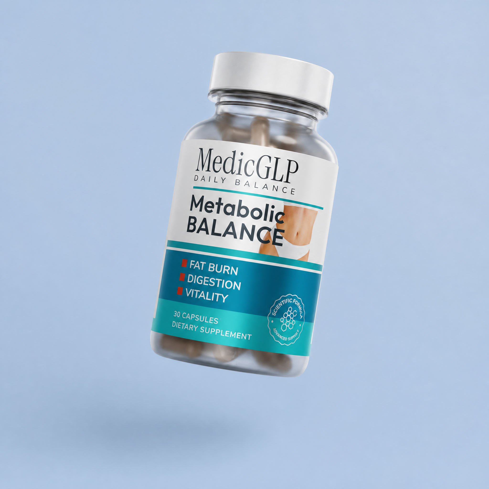
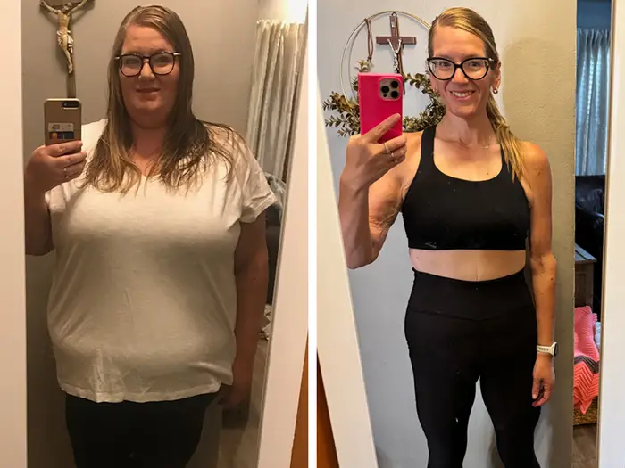
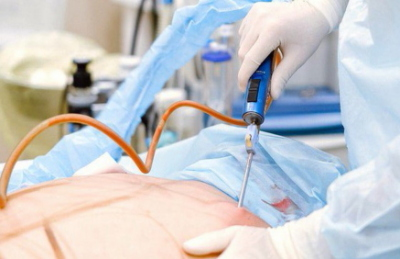

This is something not available in pharmacies, and not seen on TV.
Yet it works.
Originally, my goal was to lose weight during my menopause stage.
And the result of it? Got my husband begging for my attention.
Now the roles were inverted.
(Spoiler: I lost 16kg in 3 weeks, intimacy came back and the marriage feels like when we were 25, even though we are pushing 50!)
You may have tried to beg for his attention, make an extra effort in bed, start interactions with him.
But instead of reciprocity, you just hear 'Not today babe.'
I was in your same situation.
We slept in different bedrooms and our only interactions were to talk about the weather and traffic.
As I said before, I tried a bunch of methods out there, even my husband was asking me why I kept doing weird stuff every week.
And I felt so helpless to not find anything that worked, because honestly, at some point it feels like there is no solution to our own weight.
After a year or so, my research led me to Dr. Hilary Jones.
He had been studying the metabolism of women for over 35 years, and this is how I found out about this thing.
This thing is so incredible that it keeps your metabolism in 'on' mode even while you sleep.
I booked an appointment with Dr. Hilary Jones, and he showed me his 'banned research'.
Piles of folders sitting in an office, that he couldn't show to the public, because according to him, the people behind the shadows were going to shut it down again.
The research found that keeping your metabolism going on without interruptions just needed natural ingredients, the research was strongly against any that was synthetic.
And that is how I found the one thing that had it all.
It's called MedicGLP.

A formula that has been out there for years, but still very few people mention it.
It acts the same way as GLP-1, but in a capsule you take every night.
It's packed with natural ingredients like Korean Ginseng and Cayenne, to make thermogenesis possible and let fat oxidize at a faster rate.
He showed me the site where it was being sold, and of course, my desperation didn't help.
I bought it instantly.
After 3 weeks, I had lost 16kg, but the best part of it came in the 4th week.
What began as an impulsive purchase, ended up being the return of the flame in my marriage.
Out of nowhere, my husband started hugging me from the back.
He was the one texting me if we would 'hang out' after we got home from work.
Now he was the one looking for my attention.
And I won't blame him, the one thing that was keeping our marriage dead was nothing more than my weight.
In week 5, intimacy had now become a daily habit.
Sometimes we even had it twice per day.
And I'm not afraid to say this here because I know this is what women want back in their marriage.
All of my friends were just like me.
Overweight, and with marriages that were dying, some faster than others.
So I started by talking to them about it, they saw my results and didn't think twice about getting these capsules.
All told me their marriage was back.
Some of them in week 2, others in week 6.
But that's how I realized that weight is really the most overlooked factor in dead bedrooms.
It's very simple:
This is literally a night routine, and it makes your body start functioning like it was supposed to do.
As the marriage progresses, finding ways to recover it becomes increasingly difficult.
But after you know what I just exposed in my blog, you'll see how your husband chases you around the house.
Because he didn't change.
He was just not interested, and both of you didn't know why.

"I didn't think I could do it..."
After childbirth: belly, folds, cellulite.
-19 kg in one month. My skin is firmer, my figure more beautiful than before my pregnancy.
Today I feel more beautiful than ever.
Katharina Vogel, 33, teacher
In 3 weeks - 10 kg lighter.
You'll look at yourself in the mirror and say:
"Yes. That was the right decision."
Get the discount ➔
Get the original formula MedicGLP with 50% discount.
Supported by the European Health Council.
Get the discount ➔